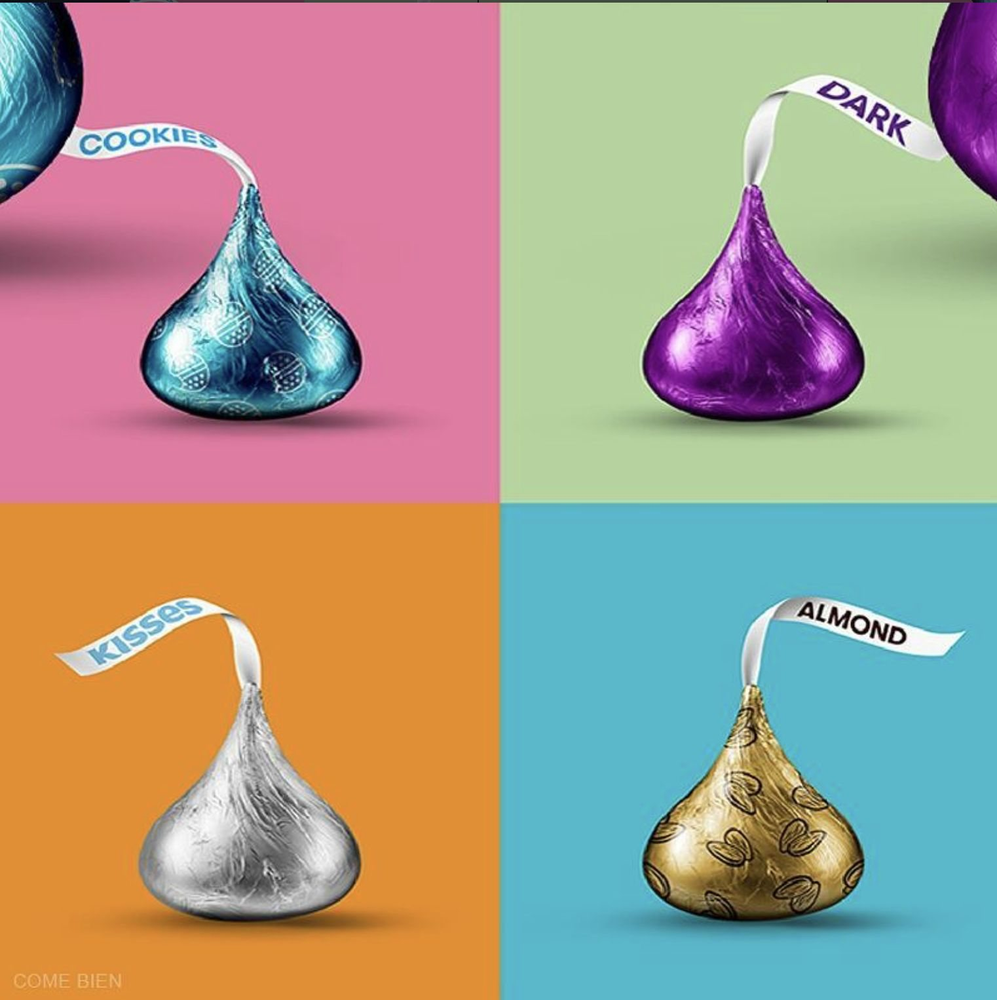
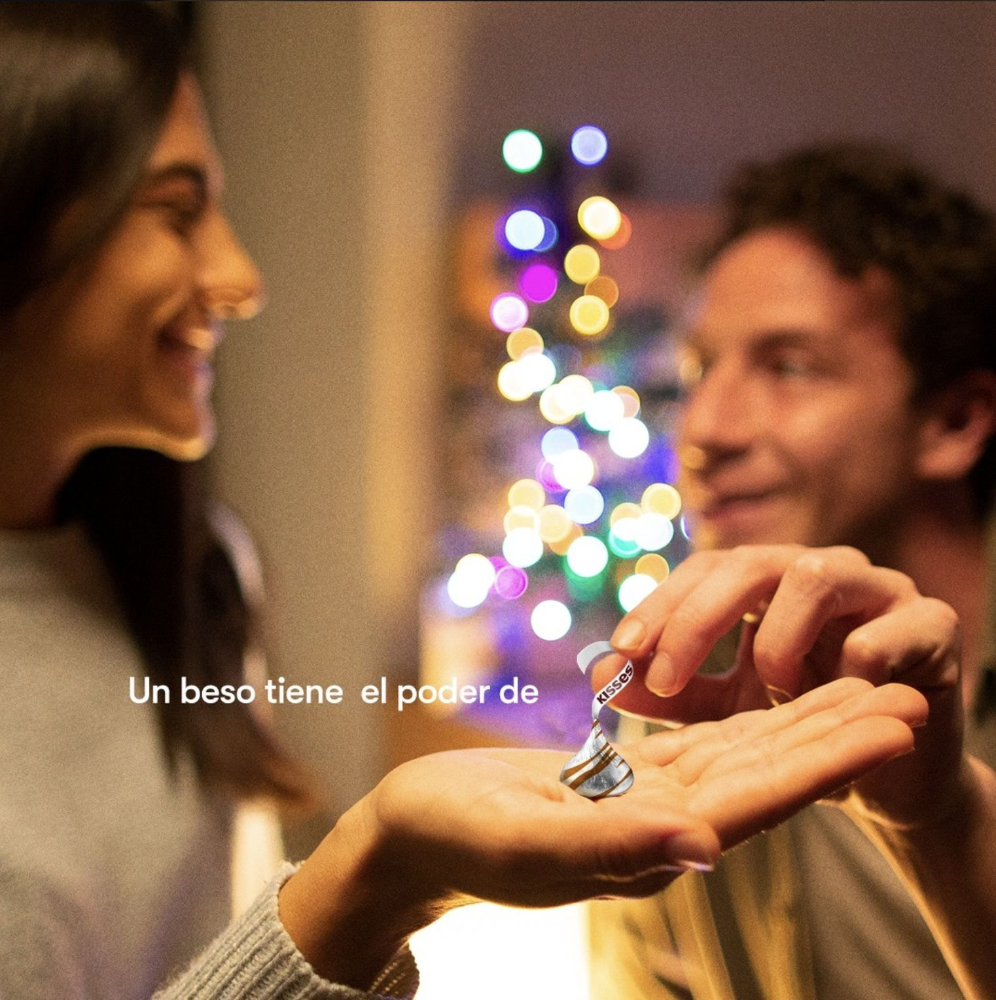
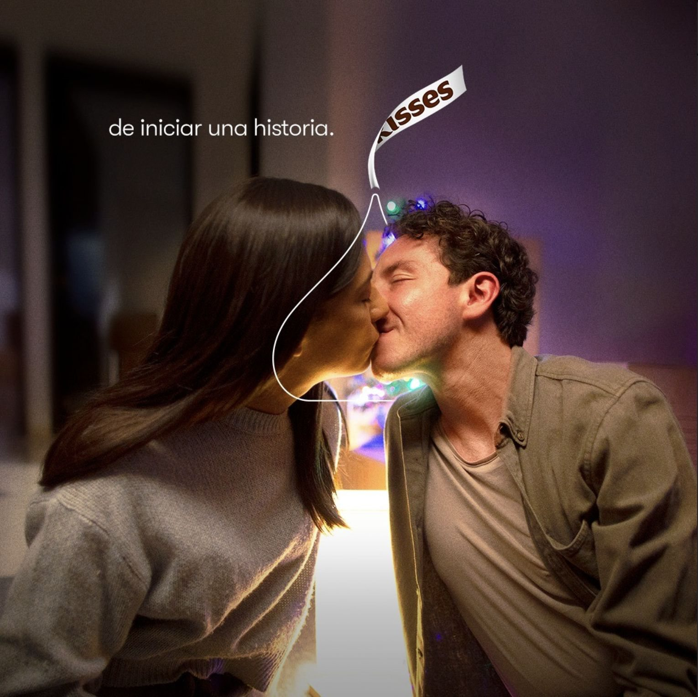
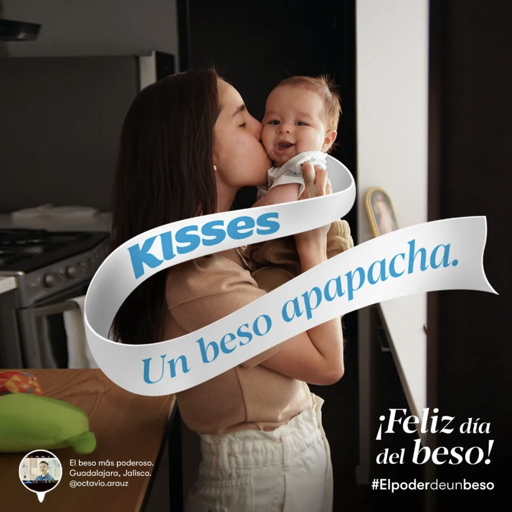
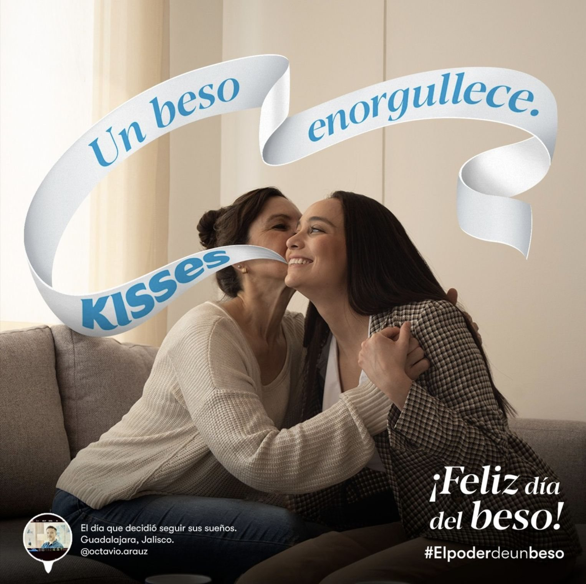

El contexto & el reto
Kisses llegó al país en los años 90, con la ola de marcas americanas, y se volvió rápido el ícono del chocolate americano — especialmente de su marca madre, Hershey's. Pero con la llegada de más marcas, su poder de marca se diluyó: se había vuelto un chocolate «barato», moneda de cambio en las tienditas.
El reto: elevar el brand power encontrando un espacio único de posicionamiento — y ayudar a la compañía a elevar precios sin perder ventas.

La idea
Construimos sobre la idea de Kisses como un vehículo de afecto, algo que la marca tenía en sus inicios en EE. UU. Con entrevistas, social listening y paid media tests validamos que sí tenía un valor distintivo.
Lanzamos Kisses Inbox: una presentación de Kisses Jr. con un QR en el empaque para dejar un mensaje a la persona a la que regalabas el chocolate.
Film de campaña Kisses Inbox.
La decisión
Mientras la industria construía en nuestro mismo territorio —el afecto—, decidimos desafiar un lineamiento que venía de global: hacer referencia directa entre los besos y los Kisses.
«Un beso tiene el poder de iniciar una historia.»


La campaña
Lanzamos una campaña intensiva con mucho A/B testing, estudios de brand awareness en YouTube y listening constante, para comprobar algo:
que Kisses es la marca de la industria que mejor puede hablar de emociones, porque ninguna otra lleva «besos» en el nombre.
Film de campaña — La única marca.
Las ejecuciones
Una plataforma always-on que llevó «el poder de un beso» a cada momento del año, hablando siempre desde el afecto.


Estudios de Brand Power.